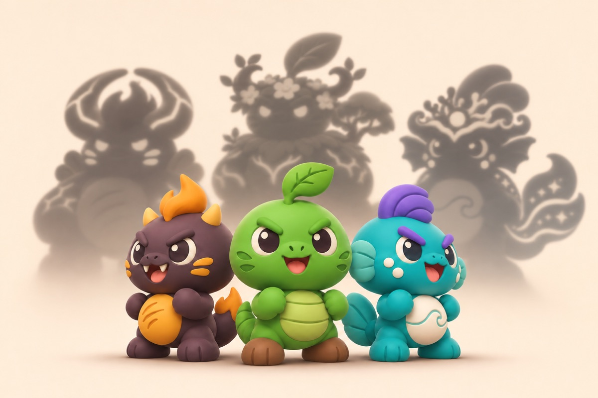

Pick an egg. Hatch a monster. Make it yours.
Grumbit is a monster pet for iPhone and iPad. Feed it, clean up after it, train its Power, Guard and Speed, and send it into scuffles. How you raise it decides which of 40 forms in four lines it evolves into. Busy? Send it prowling, follow it along the trail, lend a hand on the way, and it comes home with a haul.
A monster that is actually yours: it starts as an egg, grows through five stages and, on the usual rules, never dies. Earn the Storm egg on a Circuit of 45 rivals, let a second monster move in so one plays at home while the other is out, and enter the Weekly Rumble for a new bracket every week and a Game Center leaderboard. Find 60 relics, fill the Monsterpedia, and retire your champions to the Hall of Legends so the next egg inherits a legacy. Widgets on your Home Screen and Lock Screen show how it is doing, and your monsters follow you between your iPhone and iPad through iCloud.
For iPhone and iPad. Free to play, with optional purchases and ads. The game asks your age group once, at the start; players under 13 get non-personalised ads, no tracking request and no unprompted purchase offers.